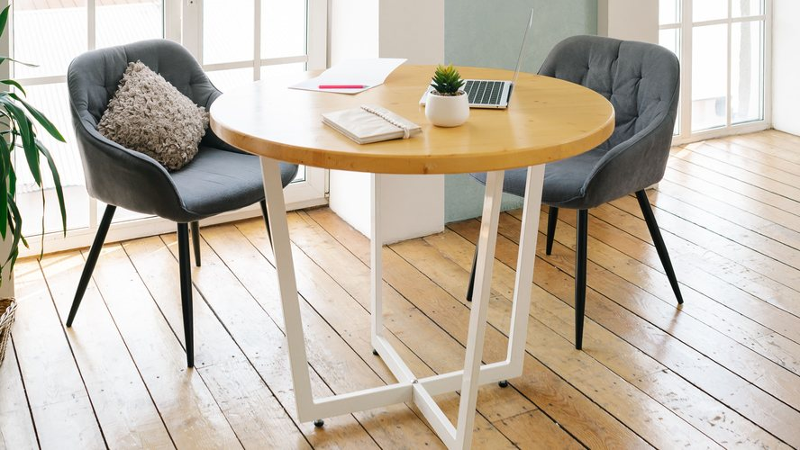

柏の独立系FP 白岩FP事務所90歳までの収支を見える化
- 相談実績1,900件超
- 初回60分11,000円
- J-FLEC認定アドバイザー
※相談実績は、2013年の開業からの延べ件数です（2026年8月末時点）。
柏駅東口から徒歩6分の独立系FP事務所です。現在の家計状況から90歳までの収支・資産残高を試算します。初回相談は60分11,000円で、30分以内に終了した場合は相談料をいただきません。
ご相談内容
住宅の購入も教育資金の準備も、その先何十年もの家計を左右します。当事務所では、次の6つのご相談を承っております。
家計
- 家計の立て直しをしたいが、どこを改善すべきか分からない
- いまの収入で今後も生活していけるのか分からない
毎月の収支とご家族のご希望をもとに問題点を洗い出し、見直しの内容をキャッシュフロー表にまとめてお渡しします。
住宅
- マイホームを購入したいが、本当に買ってよいのか不安
- 住宅ローンの借入額の決め方を知りたい
修繕費や固定資産税も考慮に入れて、購入した場合と賃貸を続けた場合の支出を試算します。
教育資金
- 進学に向けて、いくら用意すればよいか知りたい
- 学資保険が必要かどうか、中立の立場の意見を聞きたい
進学の時期に合わせて、必要な資金をキャッシュフロー表に盛り込みます。
老後資金
- 老後の暮らしに向けて、いくら貯蓄すればよいか知りたい
- 退職金をどう使えばよいか知りたい
年金の受給見込み額を試算し、退職後の収支をキャッシュフロー表で確認します。
保険
- 保険を勧められたが、自分に合っているのか分からない
- いまの保険の保障額が妥当か確認したい
必要保障額を試算し、ご加入中の保険の内容を確認します。
資産運用
- 預金と投資のどちらを優先すればよいか分からない
- NISAやiDeCoの仕組みがよく分からない
ご家族の状況を伺いながら、預金と投資の考え方を整理します。個別の銘柄や商品をおすすめすることはいたしません。
4つの特徴
中立・独立の立場からのアドバイス

保険や投資信託など金融商品の販売はしておりません。販売手数料を受け取らないため、特定の会社や商品に偏らないご提案をいたします。
90歳までのキャッシュフロー表
住宅・教育・老後の支出を含め、90歳になるまでの収支や資産残高の推移を試算いたします。いまのままの場合と見直した場合の表を並べてお渡ししますので、どこがどれだけ変わるかが分かります。
J-FLECの認定アドバイザー
代表の白岩は、金融経済教育推進機構（J-FLEC）の認定アドバイザーです。登録の有無は、J-FLECの認定アドバイザー検索でもご確認いただけます。
来所・オンラインの両方で相談対応
ご来所が難しい方は、Zoomを使ったオンラインでのご相談をお選びいただけます。平日の日中にお時間の取れない方に向けて、土曜9:00〜12:00もご相談を承っております。
キャッシュフロー表の見本
| 年齢 | いまのまま | 見直し後 |
|---|---|---|
| 35歳 | 889 | 889 |
| 50歳 | 1,120 | 1,390 |
| 65歳 | 1,480 | 2,180 |
| 80歳 | 620 | 1,520 |
| 90歳 | −240 | 860 |
いまのままだと65歳を境に資産が減り続け、90歳の時点で
240万円が不足します。
見直し後は、90歳の時点で
860万円が残る見通しです。
料金
初回相談
60分11,000円（税込）
最初の30分で、相談をこのまま続けるかどうかをご判断ください。30分以内に終了した場合は、来所でもオンラインでも相談料をいただきません。30分を超えた場合は11,000円を頂戴します。
ご来所の場合、料金はご相談や面談の当日に現金またはクレジットカードでお支払いください。オンラインの場合は、日時が決まったあとに、当事務所の口座へ前払いでお振込みください。日程の変更とキャンセルは前日までにお知らせください。当日のキャンセルの場合は、キャンセル料5,500円を申し受けます。
J-FLECの割引クーポン
「J-FLECはじめてのマネープラン」割引クーポンは、J-FLEC認定アドバイザーの有料相談を初めて利用する個人の方を対象に、相談料の最大8割を割り引くものです。
- 割引の上限は1時間あたり8,000円、3時間合計で24,000円
- おひとり様1回（合計3時間）限り
- 有効期間は発行から6か月間
- 配布は計3,000名分の予定。申請が上限に達した場合は、J-FLECが一時的に受け付けを中断することがあります
クーポンをお使いの方は、まずは当事務所までご連絡ください。当事務所からお受けできる旨をご連絡したあと、お客様ご自身でJ-FLECの案内ページよりお申し込みください。ご相談の日時は、クーポンが付与されてから決めます。付与までに1〜2週間程度の期間を要する場合があります。
初回相談11,000円−割引8,000円＝ご負担3,000円
（11,000円×80%＝8,800円が上限の8,000円を超えるため、割引は8,000円です）
| 継続相談 | 60分11,000円／90分16,500円2回目以降のご相談です。来所でもオンラインでもご相談いただけます。 |
|---|---|
| キャッシュフロー表の作成 | 33,000円家計・教育資金・老後資金のご相談は、この表の作成を伴うご相談として承ります。初回相談から1か月以内にお申し込みの場合は、初回相談でお支払いいただいた額を差し引きます。 |
| 住宅購入の検討 | 55,000円住宅ローンの借入額と購入後の家計を試算し、グラフと数値の資料にまとめてお渡しします。 |
| 顧問契約 | 月額13,200円月1回の面談で、キャッシュフロー表を最新の数字に更新します。メールでのご相談は随時お受けします。表を新しくおつくりする場合の費用は、別途頂戴します。契約期間の縛りはありません。解約のお申し出をいただいた翌月から、料金は発生しません。 |
表示はすべて税込です。キャッシュフロー表の作成と住宅購入の検討の料金には、面談2回（各60分）と資料作成費が含まれています。お渡しまで、2週間ほどお時間を頂戴します。保険と資産運用のご相談は、初回相談と継続相談の料金で承ります。
ご相談の流れ
Step1ご予約
日程調整のため、まずはフォームかお電話でご連絡ください。来所・オンラインいずれでもお選びいただけます。割引クーポンのお申し込みの手順については、こちらをご覧ください。
Step2ヒアリング
初回相談で、いまのお困りごとと、ご家族の状況を伺います。表の作成をご希望の方は、ここでお申し込みください。
Step3現状分析
表の作成をお申し込みいただいたあとの1回目の面談で、お手元の書類をもとに、収入と支出、預金、ローン、保険の状況を把握します。
Step4プランのご提案
2回目の面談で、いまのままの場合と見直した場合のキャッシュフロー表をお渡しし、違いをご説明します。
Step5手続きのご案内
決めたことを実行に移す順番と、必要な書類をご案内します。
Step6アフターフォロー
顧問契約の方は、月に一度、キャッシュフロー表を最新の数字に更新いたします。顧問契約のない方の場合も、暮らしが大きく変わったときは、当事務所で再度表を作成いたします。
初回相談からキャッシュフロー表のお渡しまで、ご相談と面談は合わせて3回、期間は1か月ほどです。初回相談から1か月以内に表の作成をお申し込みの場合、料金は合計33,000円です。
代表あいさつ
お客様の声
住宅を買うかどうかで迷っていました。買った場合と賃貸を続けた場合で家計がどう違うのか、表を見ながらふたりで決められました。
柏市・ご夫婦（30代）・住宅の検討 2025年2月保険の見直しを相談しました。いま入っている保険と必要な保障額を並べてもらい、保障が重なっているところが分かりました。
我孫子市・男性（40代）・保険の見直し 2025年9月退職金の使い方ごとに、年ごとの残高を表で確かめられたので、夫婦で話し合いやすくなりました。
柏市・ご夫婦（60代）・退職後の資金計画 2026年3月掲載のご了承をいただいたお客様の声です。個人の感想である点にご留意ください。
よくある質問
保険や投資の勧誘はありますか？
当事務所では、金融商品の販売や勧誘はしていません。
相談内容が外部に漏れることはありませんか？
ファイナンシャル・プランナーには、職業上の倫理規定と守秘義務があります。ご相談で伺った内容を外部に漏らすことはありません。お預かりした書類は、鍵のかかる場所で保管します。
相談時間は決まっていますか？
初回相談は1回60分です。2回目以降のご相談は、90分でもお受けしています。
当日の持ち物は何ですか？
源泉徴収票（または確定申告書の控え）、通帳、保険証券、住宅ローンの返済予定表、ねんきん定期便をお持ちください。お手元にあるものだけでも結構です。オンラインの場合は、書類の写真を、ご相談日の前日までにメールでお送りください。送り先は、ご予約をお受けした際にお知らせします。
夫婦で相談できますか？
ご夫婦でのご相談も承っております。料金は相談時間に応じて頂戴しておりますので、おひとりでもおふたりでも変わりません。
家計簿がなくても相談できますか？
家計簿がなくてもご相談いただけます。源泉徴収票と通帳があれば、おおまかなお金の出入りはつかめます。細かな支出は、ご相談のなかで一緒に洗い出します。
表をもらったあとのフォローはありますか？
キャッシュフロー表をお渡ししてから1〜3か月あとに、実行の状況を伺う継続相談をおすすめしています。その後は転職・出産・住宅の購入など、暮らしが変わるときにご相談ください。
お知らせ
9月から、土曜9:00〜12:00のご予約も受け付けます。
受付時間を平日9:00〜18:00に変更いたしました。
アクセス
柏駅周辺の地図
- 所在地
- 千葉県柏市柏0-0-0 ○○ビル3階（架空の住所です）
- 最寄り駅
- 柏駅東口から徒歩6分
- 定休日
- 日曜・祝日
- 駐車場
- 事務所付近のコインパーキングをご利用ください。
ご相談の予約
事業者情報・個人情報の取り扱い
- 事業者名
- 白岩FP事務所（架空の事務所です）
- 代表
- 白岩 誠一（CFP®認定者・1級ファイナンシャル・プランニング技能士・J-FLEC認定アドバイザー）
- 所在地
- 千葉県柏市柏0-0-0 ○○ビル3階（架空の住所です）
- 電話
- 04-0000-0000
- 業務の範囲
- 家計・住宅・教育・老後・保険・資産運用の相談と、キャッシュフロー表の作成。金融商品の販売・仲介および投資助言は行いません。
- 個人情報
- お預かりした家計の情報は、ご相談へのお答えと資料の作成にだけ使います。法令に定める場合を除き、ご本人の同意を得ることなく第三者に提供することはいたしません。これらの情報の開示・訂正・削除をご希望の場合は、お電話でお申し出ください。